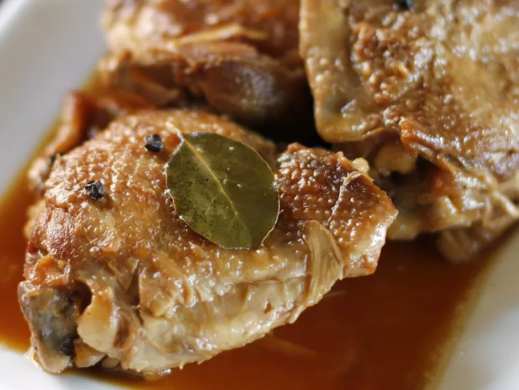

Home

Prep Time: 10 mins
Total Time: 1 hr 20 mins
Yield: 8 servings
Cook Time: 1 hr 1 mins
Servings: 8
- 3 tablespoons vegetable oil
- 3 pounds of boneless, skinless chicken
thighs, rinsed and patted dry
- 6 cloves garlic, peeled and thinly sliced
- 1/2 cup soy sauce
- 1/2 cup apple cider vinegar
- 1/2 cup water
- 2 tablespoons pickling spice, wrapped in cheesecloth
- Heat oil a large pot over medium until oil is shimmering.
Cook garlic in oil for no more than 30 seconds. Add all of
chicken to the pot; cook, stirring frequently, until chicken
is white all over. Do not brown.
- Pour in soy sauce, vinegar, and water, and add the pickling spice.
Make sure the spice ball is submerged. Bring to a boil, reduce heat to simmer,
and place lid on pot so that some steam can escape. SImmer for 1 hour or until chicken is very tender.